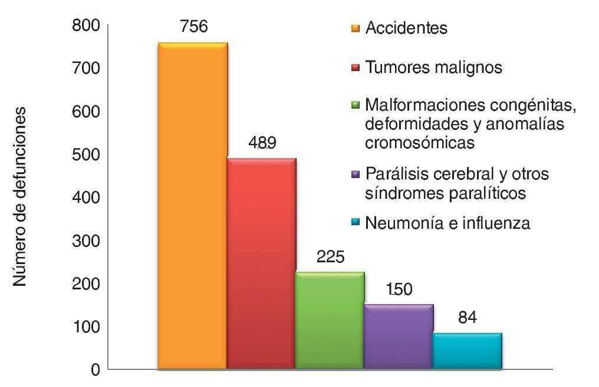

Introducción
Ecuador, como muchos otros países, enfrenta serios desafíos relacionados con la salud pública, especialmente cuando se trata de enfermedades mortales. A lo largo de las últimas décadas, el panorama epidemiológico del país ha cambiado significativamente, pasando de enfermedades infecciosas y parasitarias a un creciente predominio de enfermedades no transmisibles (ENT), que hoy representan las principales causas de muerte. Estas enfermedades incluyen el cáncer, las enfermedades cardiovasculares, la diabetes y las enfermedades respiratorias crónicas, entre otras.
Según estadísticas del Ministerio de Salud Pública de Ecuador, las enfermedades cardiovasculares son la principal causa de muerte en el país, seguidas por el cáncer y la diabetes. La urbanización, el aumento de hábitos poco saludables como una dieta alta en grasas y el sedentarismo, sumados a factores como el envejecimiento de la población, han contribuido a este cambio en el perfil de enfermedades prevalentes.
Impacto de las Enfermedades Mortales en Ecuador
El impacto de las enfermedades mortales en Ecuador es profundo y multifacético, afectando no solo la salud de la población, sino también la economía y el bienestar social del país. A medida que las enfermedades no transmisibles (ENT) se han convertido en las principales causas de muerte, el país enfrenta una creciente carga en términos de recursos sanitarios, productividad laboral y calidad de vida de los ciudadanos.
1. Impacto en la salud pública
Las enfermedades mortales, como las enfermedades cardiovasculares, el cáncer, la diabetes y las enfermedades respiratorias crónicas, representan una amenaza directa a la salud de millones de ecuatorianos. Cada año, miles de personas pierden la vida a causa de estas patologías, lo que no solo genera sufrimiento humano, sino también una presión considerable sobre los servicios de salud pública. Si bien el país ha avanzado en la cobertura de atención médica, muchas personas, especialmente en áreas rurales o de bajos recursos, carecen de acceso a servicios preventivos, diagnósticos tempranos y tratamientos adecuados, lo que dificulta el control y manejo de estas enfermedades.
2. Carga económica y social
Las enfermedades mortales también tienen un gran impacto en la economía del país. La atención médica, la hospitalización prolongada y los tratamientos costosos asociados con enfermedades graves generan una carga financiera tanto para las familias como para el sistema de salud público. Las personas que padecen estas enfermedades, especialmente aquellas que desarrollan complicaciones, a menudo enfrentan dificultades para continuar trabajando, lo que puede resultar en pérdida de ingresos, empobrecimiento de las familias y aumento de la pobreza.
En el caso de las enfermedades cardiovasculares y la diabetes, por ejemplo, el tratamiento y las hospitalizaciones repetidas pueden acarrear costos significativos. Además, muchas de las personas afectadas por enfermedades crónicas o terminales no pueden aportar al desarrollo económico del país debido a su deterioro físico o incapacidad laboral. Esto crea un ciclo de pobreza que se perpetúa entre las familias afectadas.
3. Desigualdades en el acceso a la salud
Otro impacto importante es la desigualdad en el acceso a la salud. En Ecuador, existe una notable disparidad en la calidad y disponibilidad de atención médica entre las zonas urbanas y rurales. Las personas que viven en comunidades alejadas enfrentan barreras significativas para acceder a los servicios de salud, lo que empeora las tasas de mortalidad por enfermedades prevenibles. La falta de infraestructura, médicos capacitados y equipos médicos adecuados agrava aún más la situación.
4. Carga emocional y psicológica
El impacto de las enfermedades mortales en Ecuador no solo se mide en términos de muertes y costos económicos, sino también en las consecuencias emocionales y psicológicas que enfrentan los pacientes y sus familias. El diagnóstico de una enfermedad crónica o terminal puede ser devastador, tanto para el paciente como para sus seres queridos. El estrés, la ansiedad y la depresión son comunes entre las personas que viven con enfermedades graves, lo que afecta la calidad de vida de quienes padecen estas condiciones y de sus familias.
5. Impacto en las políticas de salud pública
El creciente número de enfermedades mortales también ha influido en las políticas públicas en Ecuador. A pesar de los esfuerzos por mejorar el sistema de salud, el país aún enfrenta retos significativos en cuanto a la prevención y el tratamiento de enfermedades no transmisibles. La educación en salud, el acceso a chequeos regulares, y la promoción de estilos de vida saludables son áreas clave en las que el gobierno ecuatoriano debe invertir más recursos. Además, la creación de políticas públicas orientadas a la prevención y la atención oportuna de estas enfermedades es esencial para reducir su impacto a largo plazo.
<
Estadísticas Impactantes sobre Enfermedades Mortales

Gráfica: Enfermedades Mortales - Estadísticas Globales y Locales
Esta gráfica muestra las principales enfermedades mortales a nivel mundial y en Ecuador, revelando datos clave sobre las tasas de mortalidad, las causas más comunes de muerte y su impacto en la salud pública.
A nivel mundial, las enfermedades mortales son responsables de millones de muertes cada año. Estas enfermedades no solo afectan la salud de las personas, sino que también generan una carga económica y social significativa. A continuación, te presentamos algunas estadísticas clave que destacan la magnitud de este problema.
Estadísticas Globales
- 41 millones de muertes anuales (70% de todas las muertes) son causadas por enfermedades no transmisibles, como el cáncer, las enfermedades cardiovasculares, la diabetes y las enfermedades respiratorias crónicas. (Fuente: Organización Mundial de la Salud, 2023)
- El cáncer es responsable de aproximadamente 9,6 millones de muertes al año, siendo una de las principales causas de muerte en todo el mundo. (Fuente: Agencia Internacional para la Investigación del Cáncer, 2022)
- Las enfermedades cardiovasculares son responsables de más de 18 millones de muertes cada año, lo que las convierte en la principal causa de muerte a nivel global. (Fuente: OMS, 2022)
- La diabetes se ha convertido en una de las principales enfermedades crónicas, con un aumento del 70% en muertes relacionadas con la diabetes en los últimos 30 años. (Fuente: Federación Internacional de Diabetes, 2023)
- El 80% de las muertes por enfermedades no transmisibles ocurren en países de ingresos bajos y medianos. (Fuente: Organización Mundial de la Salud)
Estadísticas en Ecuador
- Las enfermedades cardiovasculares son la principal causa de muerte en Ecuador, representando aproximadamente el 25% de todas las muertes en el país. (Fuente: Ministerio de Salud Pública de Ecuador, 2022)
- El cáncer es la segunda causa de muerte más común en Ecuador, con alrededor de 12,000 muertes anuales, especialmente en tipos como el cáncer de mama y de próstata. (Fuente: Ministerio de Salud Pública de Ecuador, 2022)
- La diabetes afecta a aproximadamente 1 de cada 10 ecuatorianos, y es responsable de un aumento significativo de la mortalidad en el país. (Fuente: Federación Nacional de Diabetes de Ecuador, 2023)
- Las enfermedades respiratorias crónicas, como la EPOC (Enfermedad Pulmonar Obstructiva Crónica), afectan principalmente a los adultos mayores, y son responsables de una proporción considerable de las muertes en Ecuador. (Fuente: Ministerio de Salud Pública de Ecuador, 2023)
Impacto en la Población y el Sistema de Salud
Estas enfermedades no solo causan muertes, sino que también tienen un enorme impacto en el sistema de salud y la economía del país. Las enfermedades crónicas requieren tratamientos largos y costosos, lo que pone una presión considerable sobre los recursos públicos y privados en Ecuador.
Es fundamental tomar medidas de prevención y concientización para reducir estas estadísticas. La detección temprana y el tratamiento adecuado pueden salvar miles de vidas, y mejorar la calidad de vida de muchas personas que viven con estas enfermedades.